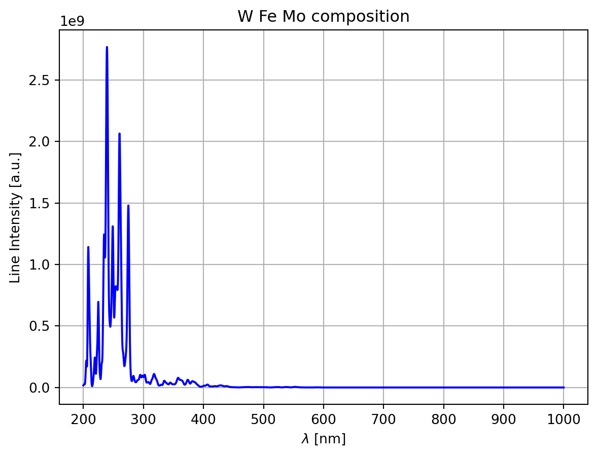

Simulación de espectros LIBS con el paquete SimulatedLIBS
El paquete SimulatedLIBS permite simular espectros LIBS de manera sencilla mediante la función simulation.SimulatedLIBS que tiene los siguientes parámetros:
Te: Temperatura electrónica de la muestra en eV.
Ne: Densidad electrónica de la muestra en cm\(^{-3}\).
elements: Lista con los elementos presentes en la muestra.
percentages: Lista con los porcentajes de cada elemento en la muestra.
resolution: Resolución del espectro en nm.
low_w: Longitud de onda mínima en nm.
upper_w: Longitud de onda máxima en nm.
max_ion_charge: Máximo estado de ionización a considerar.
webscraping: Método de web scraping a utilizar. Puede ser “static” o “dynamic”.
En este ejemplo, se simula un espectro LIBS para una muestra compuesta por tungsteno (W), hierro (Fe) y molibdeno (Mo). La muestra tiene una temperatura electrónica de 1 eV y una densidad electrónica de \(10^{17}\) cm\(^{-3}\). La muestra está compuesta por un 50% de tungsteno, un 25% de hierro y un 25% de molibdeno. El espectro se simula en el rango de longitudes de onda de 200 a 1000 nm con una resolución de 1000 puntos. Se calculan los espectros de emisión de los elementos hasta el estado de ionización 3. Se utilizan dos métodos de web scraping para obtener los datos de la base de datos del NIST: uno estático y otro dinámico.
Con web scraping estático:
import matplotlib.pyplot as pltfrom SimulatedLIBS import simulationlibs = simulation.SimulatedLIBS( Te=1.0, Ne=10**17, elements=["W", "Fe", "Mo"], percentages=[50, 25, 25], resolution=1000, low_w=200, upper_w=1000, max_ion_charge=3, webscraping="static",)libs.plot(color="blue", title="W Fe Mo composition")#plt.savefig("img/plot_static.png")

A continuación, se guardan los datos del espectro en un archivo CSV.
libs.save_to_csv("datos/spectrum.csv")
También podemos obtener el espectro de la base de datos del NIST.
libs.get_raw_spectrum()
wavelength
intensity
0
200.0
1.696e+07
1
200.3
1.994e+07
2
200.6
2.221e+07
3
200.9
2.381e+07
4
201.2
2.475e+07
...
...
...
2716
998.8
2.271e-04
2717
999.1
1.442e-04
2718
999.4
9.109e-05
2719
999.7
5.721e-05
2720
1000.0
3.574e-05
2721 rows × 2 columns
Generación de espectros LIBS
El siguiente script permite generar una base de datos de espectros con diferentes concentraciones y combinaciones de elementos (en este caso, K, Ca, Sc, Ti, V, Cr, Mn, Fe, Co, Ni, Cu, Zn).
from simLIBS import SimulatedLIBSfrom itertools import combinations, productimport os# Create the examples folder if it does not existifnot os.path.exists("datos/ejemplos"): os.makedirs("datos/ejemplos")# Function to generate the spectradef generate_spectra(elements, percentages): name ="-".join([elements[i] +"-"+str(percentages[i]) for i inrange(len(elements))])ifnot os.path.exists("datos/ejemplos/"+ name +".csv"): libs = SimulatedLIBS( Te =1.0, Ne =10**17, elements = elements, percentages = percentages, resolution =1000, low_w =200, upper_w =1000, max_ion_charge =3, webscraping ="static", ) libs.save_to_csv("datos/ejemplos/"+ name +".csv")return# Element lists to include in the spectraelements = ["K", "Ca", "Sc", "Ti", "V", "Cr", "Mn", "Fe", "Co", "Ni", "Cu", "Zn"]# Range of concentrationsconcentrations =range(5, 100, 5)# Get all the combinations of elements.elements_combinations = combinations(elements, 3)# Get all the concentrations that sum 100.percentages_combinations = product(concentrations, repeat =3)percentages_combinations = [i for i in percentages_combinations ifsum(i) ==100]# Generate the spectra for any combination of elements and concentrations.for comb in elements_combinations:for perc in percentages_combinations: generate_spectra(comb, perc)